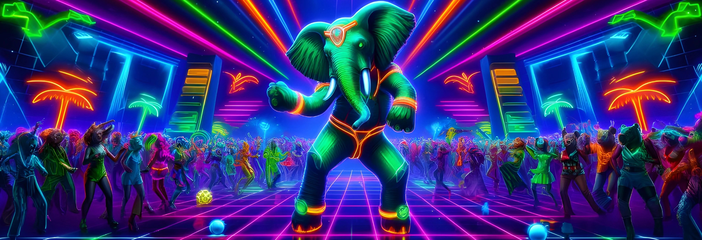
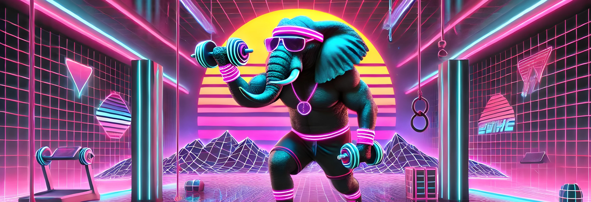
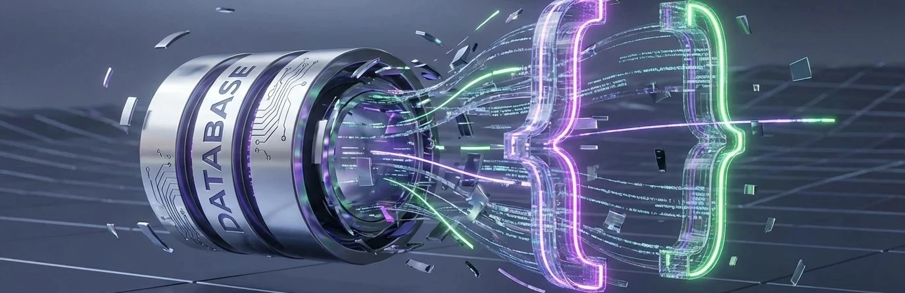
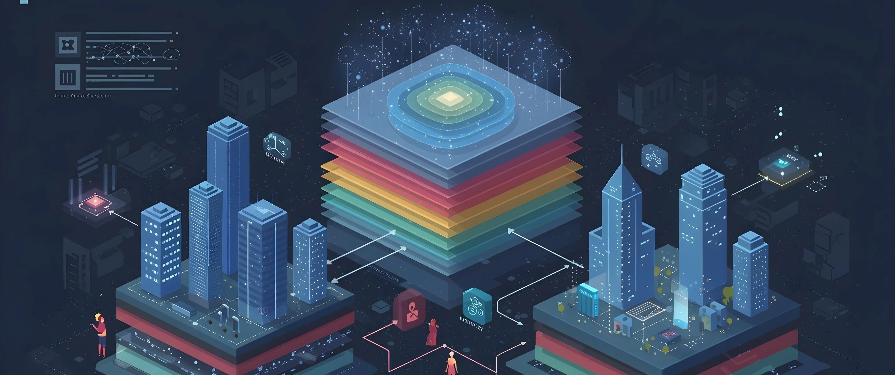
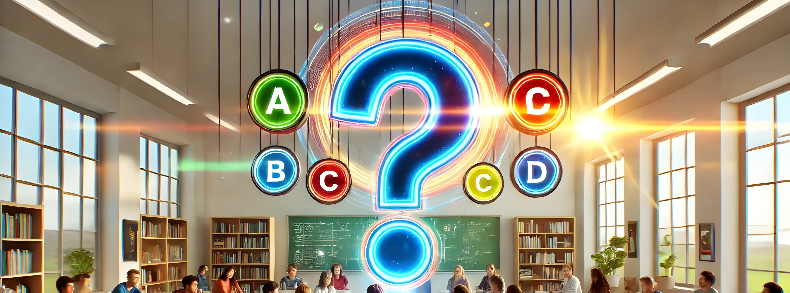
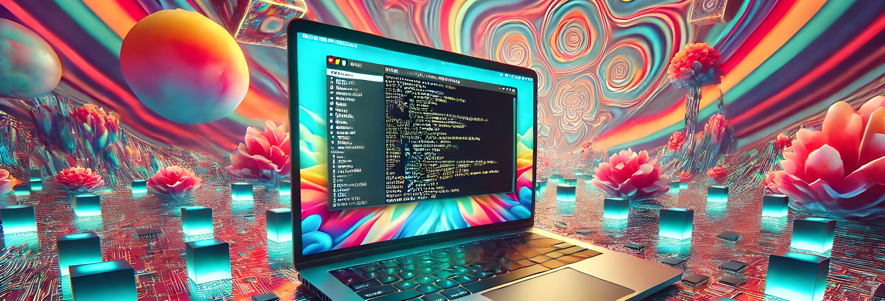
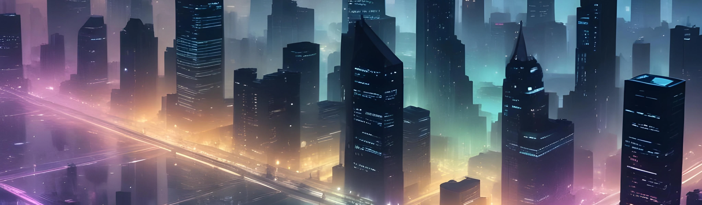
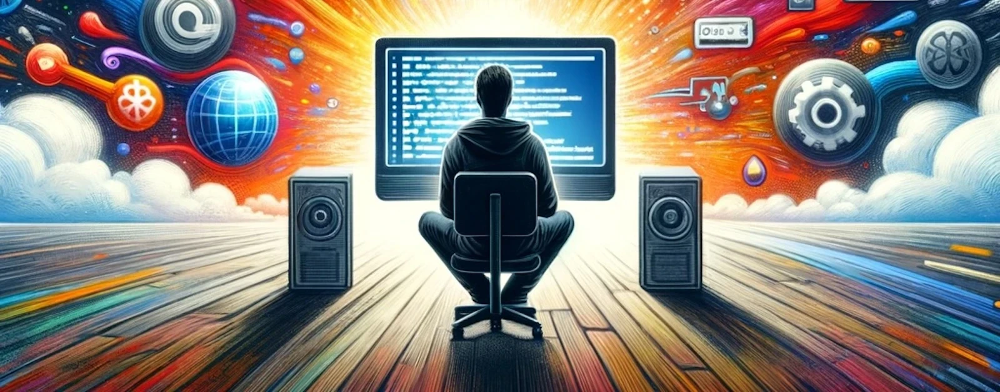

A new set spanning databases, teaching, quizzes, automation, and the blog itself. Each proposal explores its article through paper, photography, print, or sculpture. Compare against the current artwork below.
Decision: keep the existing LLM connection strings cover because it conveys important details. New proposal is retained for comparison only; do not promote it. Fresh square: recompose around the binding and three distinctive scraps; preserve the continuous thread. Shallow crop should retain knot and horizontal thread. Alternatives considered: Continuous thread unifying fragmented configuration; Portable accordion itinerary; One binding around incompatible loose swatches.
Generation prompt
Use case: stylized-concept. Wide 16:9 editorial hero, target 1600x900. Article: a portable single connection string unifies model, provider, and runtime configuration that otherwise remains scattered. Create a sophisticated flat graphic print and photographic paper collage, inspired by independent literary journal covers. One long continuous oxblood-red cord travels in a confident horizontal loose gesture across an ochre-yellow rough paper field. At center it forms ONE simple binding around a small fan of five distinct blank photographic paper scraps: matte dark wool, polished silver metal, leaf-green glass, warm black toner and pale gray paper. The scraps are gathered together by the same visible cord, not scattered symbols; its long ends continue across the composition, one clear flowing line. Cord large enough to read at 96px, a tactile printed rope silhouette with occasional real-fiber photographic inserts; no intricate knot diagram. Close frontal composition with strong negative space, two huge overlapping ochre and maroon monoprint fields and a restrained charcoal ink impression behind the bundle, graphic painterly edge variation. Sharp cut edges, analog ink grain, visually sophisticated asymmetry; not a tabletop product shot, not miniature machinery. Central binding and scraps stay within middle 55 percent for shallow and square compositions. No text, handwriting, numbers, URL, logos, code, labels, interface, robot, circuits, beige plates, apertures, slots, trays, watermark or outer border.
07 Quiz: Deep Postgres: Pt. 2
Current cover

New proposal · Relational weave
Accepted abstract relational weave: over/under crossings are legible and loose ends retain the idea of nonparticipants; no generated labels or purported query plan. Broad cobalt, peach and chartreuse differ from Pt1's photographic elephant. Center crop retains weave; a fresh square should shorten loose ends and keep the main crossing intact. Shallow 2.25:1 preserves central connection but trims vertical strip tips. No square generated.
Generation prompt
Use case: stylized-concept. Wide landscape 16:9 full-bleed mature editorial art for a PostgreSQL quiz about joins, transaction behavior and indexes. Depict the idea that relationships must actually line up: a close overhead abstract composition of long separate cut-paper bands becoming a single richly interlaced weave at the center. Three broad cobalt bands move in from the left and three peach bands from the right, with slender chartreuse strips crossing vertically. The central woven patch is a clear dominant tactile shape, with large visible alternating over-and-under crossings. A few unjoined ends continue loose, showing that not every input participates. Bold broad strips, not a dense cloth with dozens of threads. Sweeping diagonal composition, close crop, expressive irregular hand-cut edges. Dense cobalt ultramarine background paper, peach-orange and acidic chartreuse contrasting bands, subtle black ink grain. Mostly flat overhead collage with slight raised physical paper crossings and crisp intimate interlayer shadows. Fine fibers, occasional scissor nicks. Visually complex enough to be beautiful but simple enough to read at 200px. Keep the main weave within central 65% of the composition, breathing room at sides. This is an editorial metaphor not an accurate database diagram; no arrows, symbols, quantified data, words, labels, title, logos, watermark or UI. No elephant mascot, beige, ivory table, dusty blue/terracotta palette, architectural models, miniature gates, slots, trays, glossy 3D or photoreal workshop. Make a confident art plate with asymmetry and visual energy.
08 Quiz: Deep Postgres: Pt. 1
Current cover

New proposal · The convincing impostor
Accepted photographic elephant/type collage, retaining the quiz's elephant connection with mature imagery instead of synthwave costume. The triangle is the convincing outsider, not a valid type diagram or full answer key. Fresh square should recompose elephant face, trunk and triangle together, simplifying other shapes; a centered square loses much of the elephant's face and right-hand forms. Shallow 2.25:1 keeps trunk/triangle, clips ear/shoulder, so prefer 16:9 if full elephant portrait matters. No square generated.
Generation prompt
Use case: illustration-story. Create a sophisticated wide landscape 16:9 technical journal hero for a PostgreSQL quiz about real types, convincing invalid types, casting and constraints. Use adult editorial photographic collage. One enormous black-and-white photographic cut-out of a real elephant's head and shoulder occupies the left-middle, cropped confidently at the shoulder, detailed natural skin and eye, no clothing and no anthropomorphic smile. Its long trunk curls elegantly into the center as though cautiously investigating a small vivid chartreuse triangle that sits slightly apart from a small group of valid-looking geometric paper forms: one dark burgundy circle, one pink rectangle, one dark burgundy irregular polygon. The triangle is visually the curious outsider; no holes or shape-sorter. All geometry is flat scissor-cut paper. Deep coral-red textured paper backdrop, black-and-white elephant, burgundy and sharp chartreuse accents, restrained blush. Graphic composition with big blocks of saturated color and quiet paper grain. The trunk-tip and outsider triangle form the central focal relationship, with the remaining geometric forms lightly scattered nearby, not orbiting logos. Intelligently wry rather than a children's poster. Hard photographic scissor edge on the elephant, natural fibers and slight paper-edge shadows on flat cutouts. Even light, no studio tabletop or sculptural miniature environment. Full bleed rectangular artwork, no mat or frame. Readable at 200px; keep core trunk/triangle gesture in central half for square recomposition. No words, letters, numbers, fake code, title text, logos, watermark, brand elephant logo, neon, holograms, corporate 3D, colorful gym mascot, gates, slots, trays or beige architectural model. This is a metaphor for recognizing misleading type assumptions, not an answer diagram.
09 JSONB: The Best Way to Ruin Your Database
Current cover

New proposal · The beautiful overflowing envelope
Fresh square: keep bulging envelope and unruly opening centered; simplify distant scraps. Shallow crop can retain the opening and spilling contents. Alternatives considered: Overstuffed beautiful envelope; Satin curtain concealing schema clutter; Unclosed elegant storage jar.
Generation prompt
Use case: stylized-concept. Wide 16:9 editorial hero, target 1600x900. Adult sophisticated torn-paper editorial collage for an essay about JSONB: flexible document containers are useful, but blindly postponing schema decisions produces undocumented tangled complexity. A large glamorous crimson paper envelope with a soft blush-pink lining floats at a slight diagonal on a vivid dusty-rose and raspberry paper field. Its open mouth is visibly BULGING with an unruly mix of torn geometric paper shapes of contradictory sizes: long magenta strips, small charcoal semicircles, wrinkled translucent vellum fragments and a few gold threads spilling out of the opening. The beautiful outside remains crisp; the crowded interior exposes the consequence. No labels or faux writing on any contents. One blunt pale pink envelope flap hangs uselessly over the pile, unable to close. Bold flat scissor-cut and ripped-paper construction, deliberately imperfect fibrous edges, restrained interlayer shadow, intimate huge subject scale, fashion-magazine wit but serious editorial craft. Full bleed frontal photomontage with one central off-kilter envelope silhouette, spare outer composition; the tangle is concentrated and reads as clutter at tiny sizes. Raspberry/crimson/blush/charcoal palette, small brass-gold threads, no blue. Keep bulging mouth and envelope in middle 60 percent for shallow crop. No cartoon face, children’s craft, generic 3D blobs, database cylinder, brackets, code, floating icons, beige machinery, compartments, aperture, logos, title, watermark, numbers, printed text or decorative border.
10 2025's Wave of Database Innovation
Current cover

New proposal · Files riding the tide
Fresh square: one prominent file-laden boat with a short wave and shoreline; do not shrink all three boats. Shallow crop retains fleet and horizontal shoreline. Alternatives considered: Files riding a tide; Printed file strata eroded into a landscape; Portable archive becoming a sail.
Generation prompt
Use case: stylized-concept. Wide 16:9 editorial hero, target 1600x900. Refined contemporary woodblock-style paper illustration for a technical essay: rebuildable read-heavy data can travel as files over HTTP rather than always requiring a live database server. A wide seascape of bold carved indigo waves with turquoise and ice-cyan printed crests. THREE simple folded paper boats, one large central and two smaller distant, carry neat low stacks of blank pale-blue file sheets. They travel with a strong horizontal tide toward a spare curved shoreline at the right, no harbor machinery or decorative buildings. Boats themselves are blank paper, file sheet edges visible as a small repeat, not covered in symbols. The central boat is a strong recognizable silhouette, cyan hull against indigo trough, cargo securely aboard. This is a lyrical graphic print, not a diagram, measured chart, miniature toy photograph, or glowing futuristic ocean. Dense lower ink waves contrast a quiet dark indigo upper sky with subtle rough stock texture. Visible linocut gouge marks, irregular hand-printed edges, tasteful turquoise registration shifts, cut-paper boat surfaces integrated into the print. Adult independent magazine illustration, confident flat composition, limited indigo/cyan/turquoise/white palette. Keep boats and the shore in a narrow central horizontal band to survive 2.25:1 cropping. No words, labels, letters, numbers, UI, arrows, server stacks, database cylinders, circuitry, sunsets, neon, beige architectural models, logos, watermark, title or outer frame.
11 The Unassuming Power of Multiple-Choice Questions
Current cover

New proposal · hidden-roots
Compare misconceptions through the roots; no plant is explicitly designated the answer. Wide reads cleanly at 200px; thin root tips soften at 96px but distinct loops and shallow/deep structures remain. Shallow crops clip some leaf and root extremities; retain full 16:9. Regenerate square with two or three plants and their contrasting roots, not a center crop.
Generation prompt
Use case: stylized-concept. A horizontal 16:9 mature editorial cut-paper botanical collage for an essay on how carefully chosen wrong multiple-choice answers reveal different learner misconceptions. On a deep plum flat paper ground, four elegant similar sage-green leaf shoots stand side by side. Their above-ground leaves look deceptively alike, but beneath a narrow coral paper ground line their exposed cut-paper root systems have conspicuously different shapes: one gently branching, one tangled into a loop, one single shallow sideways root, and one deep clear branching network. The point is distinct hidden mental models, not one plant being marked correct. Root systems are graphic hand-cut shapes in pale pink and warm coral, graceful branching and varied silhouettes, carefully spaced, not hairline detail. Collage plus dry ink printing, visible paper fibers, slightly imperfect cut edges and gentle overlap shadows; almost flat frontal view, no table, no modeled miniature world. Sophisticated modern botanical art plate with quiet wit, bold thumbnail legibility, restrained palette of plum, pink, coral, sage. Keep all roots and leaf tops near central horizontal band so shallow crop works. No text, letters, answer symbols, checkmarks, question marks, labels, logos, watermark, neon, boxes, machinery, beige scene, corporate 3D.
12 From Zero to Regex Hero
Current coverNew proposal · ribbon-capture
Gathering versus decomposition is visible, without claiming gathered strips are valid URLs. Left is intentionally dense and right quiet. Center crop loses both source tangle and final segment: regenerate square with one compact ribbon knot, net, and five-part strip. A shallow wide crop retains the core horizontal relationship.
Generation prompt
Use case: stylized-concept. Horizontal 16:9 editorial photograph of an abstract paper-and-ink collage for a technical article about permissively extracting URL-like strings, then parsing five parts and validating later. Overhead composition on a deep moss-green fibrous paper ground. A loose beautiful tangle of long narrow paper ribbons, hand-painted saffron and muted green, winds in from left and lower left; several ribbons are laid out straight across the right half into a sequence of five broad distinct adjoining color segments, saffron, pale sage, dark olive, burnt gold, and soft mint. Two irregular candidate strips stay loosely gathered near the center rather than being discarded: collection is not yet proof of validity. Show a broad curved paper net with widely spaced strands partly surrounding the incoming ribbons, not a precision filter or gate. Organic, slightly unruly, painterly inks bleeding into paper fiber, with subtle real overlapping cast shadows. One dominant winding ribbon visibly transitions from the tangle to the clear five-part sequence, making extraction and decomposition readable. Dense interesting left, generous uncluttered right, all essential relation in middle band, no engineering miniature, no tray, no aperture. Sophisticated bold editorial material study, moss and saffron palette, no beige scene, no words, letters, URLs, syntax, labels, logos, watermark, border, glows, electronics, charts, or fake UI.
13 Quiz: AWS Storage: 20+ Questions!
Current coverNew proposal · Two climates of storage
Accepted surreal landscape: readily accessible records among leaves versus a compact cold archive in photographic glacier. Storage class access-pattern metaphor, not AWS infrastructure or measured pricing. Generated scene uses photographic orchard and ice plus a torn-paper cloud and sky, adding a different medium and density to the batch. Fresh square needs orchard, cloud and glacier rebalanced; center crop loses edge archives. Shallow 2.25:1 clips the top of cloud and lower coast but preserves the two climates; use full 16:9 for cloud silhouette. No square generated.
Generation prompt
Use case: illustration-story. Wide landscape 16:9 editorial hero for a cloud storage quiz about matching storage to access patterns, retrieval cost, lifecycle transitions and operational tradeoffs. Create a sophisticated surreal cut-photograph and torn-paper landscape, like an independent magazine's commissioned art. A large white torn-paper cloud spans the middle upper sky, raining just a few clean folded paper records with blank surfaces. Beneath it the land divides naturally into two distinct climates: a lush dark green orchard with three broad sculptural paper trees on the left, and a cool blue-gray glacier made from a sharply cut photographic ice face on the right. Several records hang visibly among the orchard's accessible leaves, while a small compact layered stack of records rests securely within a crevice at the edge of the ice. Daily retrieval versus a colder quiet archive. This is an atmospheric access-pattern metaphor, not a factual AWS architecture diagram. No technical equipment, buckets, logos, labels, arrows or symbols.
Visual language: spacious horizontal landscape, strong cloud silhouette, dramatic expansive apricot/peach paper sky, emerald and almost black green foliage, cool silver-blue natural glacier photography, subtle white paper records. A low horizon and wide graphic sky, no miniature 3D world. Irregular torn paper horizons, photographic ice with crisp scissor edge, slightly lifted matte paper layers, natural print grain. Sophisticated quiet surrealism, refined tactile richness, mature rather than children's picture book. Keep the cloud, main orchard tree and main ice face within the middle 70% of the frame so a shallow editorial crop preserves their relationship. Full bleed rectangular art, no frame, text, watermarks, fake code, UI, brand iconography, neon cyberpunk city, beige tabletop, machinery, architectural scale models, keyed slots or trays. The image should communicate two different storage environments immediately at thumbnail size without a legend.
14 Quiz: Bash & Shell Mastery
Current cover

New proposal · A shell pipeline
Accepted large natural-history shell specimens joined by one ribbon; circles become diamonds at the second shell, giving a readable transformation/pipeline. No code, labels or terminal screen. Fresh square should stack shell openings on a diagonal and shorten connecting ribbon while retaining at least one before/after shape. Center crop clips both shells; shallow 2.25:1 keeps the transfer but trims shell extremities. Use full 16:9 until recomposed. No square generated.
Generation prompt
Use case: stylized-concept. Create a beautiful wide landscape 16:9 editorial art plate for a quiz about Bash composition, piping, string transformation and tiny syntax gotchas. Use a witty literal-shell metaphor in bold adult screenprint and photographic cut-paper collage. Two very large naturally detailed white seashell cross-sections, presented like archival natural-history specimens with clear spiral interiors, face one another across a deep aubergine-purple field. Their photographic edges are sharply scissor cut. A single wide vermillion-red paper ribbon sweeps from the opening of the left shell into the opening of the right shell, visibly connecting output to input. Three small pale paper circles travel along the ribbon near the left shell; three pale angular diamond paper forms emerge from the right shell onto a short continuation of the same ribbon. A subtle transformation made legible, not an engineering diagram. The ribbon has a sweeping S curve and a single gentle fold, not tubing or miniature machinery.
Composition: flat frontal collage with the two shell specimens and red connection centered in the middle half vertically, balancing positive and negative space. One shell modestly larger than the other; spare asymmetry, crisp silhouettes and controlled tension. Color: near-black aubergine, chalk white, vermillion; no other bright hues. Contrasty monochrome shell engraving/photography, matte colored paper, light screenprint ink grain and paper fibers. Fine real cut edges and tiny interlayer shadows, not glossy rendered illustration. Quiet cleverness appropriate for an adult technical journal. Strong at 200px, keep both main shell openings and ribbon relationship away from side edges. No letters, terminal, laptop, commands, text, dollar signs, fake code, labels, charts, brand marks, watermark, UI, arrows, neon, rainbow psychedelia, beige stock, tabletop contraptions, architectural models, gates, slots or trays. Full bleed art without border or mat.
15 Replacing Myself with AI
Current coverNew proposal · friction-and-judgment
Large hand and tear read at small sizes; no text or facial features. Distinguishes polished surface from earned judgment. A central square crop is plausible but fresh square should bring hand and ragged charcoal opening together, preserve scarlet ground, and simplify the oval. Shallow crops retain the central tear but clip oval extremities.
Generation prompt
Use case: stylized-concept. Wide horizontal 16:9 sophisticated surreal editorial photomontage made from actual cut photographic paper, for an essay about AI drafts looking polished before they have earned a point of view; human judgment supplies necessary friction. A very large smooth blank white oval paper face silhouette, entirely featureless and not a robot, occupies center-left. A monochrome photographic cut-out of one believable human hand enters from the lower right and grips the oval's edge, crumpling and peeling part of its smooth surface. Beneath the peeled smooth layer, reveal jagged black charcoal strokes and irregular dark paper fragments: rough, specific, human working material rather than a second face. The hand has a crisp visible cut-photo edge and believable fingers; no person or arm beyond a short wrist. Hot scarlet paper background, an offset pale pink shape behind the oval, subtle halftone grain in the hand, rough tactile collage edges, purposeful asymmetrical layout. Minimal subject count, large forms, witty and slightly uncomfortable, not threatening. Flat frontal cut-photo collage with low dimensional paper shadows, absolutely not a beige tabletop product photograph. Strong visual tension between smooth blankness and deliberate roughness. Keep oval, hand and tear together in the central area for thumbnails; no typography, writing, words, letters, faux handwriting, logos, watermark, robots, circuits, screens, masks with facial features, blood, tools, gears, machinery, decorative sparkles, or gradient art.
16 You May Not Need Algolia
Current cover

New proposal · One fewer tether
Fresh square: scissors cut and tabbed book must share the frame; reduce cable length. Shallow crop keeps horizontal cable cut and book silhouette. Alternatives considered: Sever unnecessary external tether; Book's own pages form its index; Extra scaffolding peeled away from a finished artifact.
Generation prompt
Use case: stylized-concept. Wide 16:9 editorial hero, target 1600x900. Sophisticated cut photographic collage about static website search: index the artifact you already have and remove an unnecessary external service tether. A large real photographic closed charcoal clothbound book with thick bright white pages and five modest yellow index tabs occupies center-left. Beside it at center-right, a pair of OVERSIZED polished silver dressmaker's scissors is visibly cutting one black insulated cable that runs from the book toward the far right edge. The cable is severed directly between the sharp blades, two exposed cut ends separated by a small clear gap; the loose right end curves away. No sparks, no damage to the book; its built-in tabs remain orderly and intact. The book is a metaphor, completely blank cover and spine, no generated words anywhere. Flat frontal editorial photomontage with crisp visible scissor-cut photographic outlines, cold powder-blue torn stock backdrop and one deep blue-black broad ink field, a restrained acid-yellow accent at the tabs. Strong asymmetry, decisive silver blade crossing black cable, high contrast, quiet negative space above, real analog paper texture. Intelligent slightly wry journal art, not a stock office photo, technical diagram or tabletop engineering model. Keep book and actual cable cut within central 60 percent and vertically centered so shallow crops preserve both. No magnifying glass, robot, circuits, screens, cloud icons, labels, numerals, text, brands, logo, watermark, borders, title typography, ivory miniature mechanisms or glowing cyberpunk.
17 Lessons Learned Upgrading My Blog
Current cover

New proposal · archive-takes-flight
Retained archive becomes lighter publishing structure; no framework logo or space cliché. Full bird/book relationship spans wide; a shallow crop clips wing tips and lower page edge. Regenerate square with a smaller open book and one condensed wing arc physically continuous with its pages. Pale artwork maintains texture against light UI and strong outer separation against dark UI.
Generation prompt
Use case: stylized-concept. Wide 16:9 mature editorial cut-paper collage and linocut print for a personal technical essay about migrating an eight-year-old blog to a lighter static publishing system while keeping its existing content and features. On a pale sky-blue textured paper background, an old open graphite-gray book occupies the lower-left center. Three or four broad visible pages lift from the book and transform into one elegantly soaring paper bird across center-right; the bird is folded from the same gray-white page material, physically continuous with the curling sheets. One small lemon-yellow bookmark tab stays in the open book, suggesting history retained. The metaphor is an archive finding a lighter structure, not discarding content. A single bird, strong graceful abstract wings, handmade folded and torn paper edges combined with spare dark ink accents, airy asymmetrical negative space, no sea or boat. Near-frontal almost-flat collage with gentle interlayer shadows, slight riso ink grain, refined cultural magazine art direction. Pale sky blue, cool white, graphite, purposeful small lemon accent. Large book and wing silhouettes read at thumbnail size; keep book-to-bird relationship centered enough for a shallow crop. No legible text on pages, words, letters, charts, logos, watermark, laptop, stars, galaxy, rocket, framework marks, arrows, buildings, machinery, beige tabletop, corporate 3D rendering or cute children's illustration.